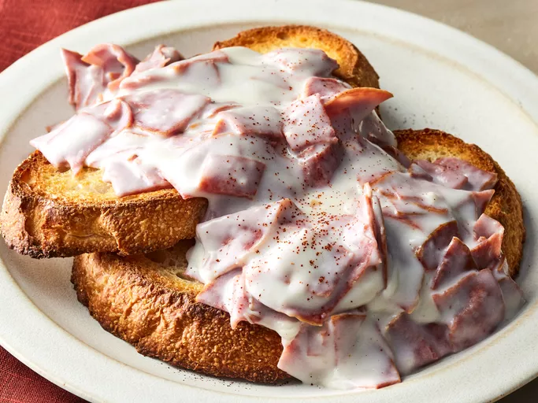

Creamed chipped beef on toast

Description
Chipped beef is pressed, salted, and dried beef. The thin, flexible slices are usually sold in glass jars. Creamed chipped beef (often called SOS) is chipped beef cooked in a cream sauce. A popular meal in the military, the comforting dish is traditionally served over toast.
Ingredients
- 2 tablespoons butter.
- 2 tablespoons all-purpose flour.
- 1 ½ cups warm milk.
- 1 (8 ounce) jar dried beef, chopped.
- 1 pinch cayenne pepper.
- bread, toasted.
Steps
- Gather all ingredients.
- Melt butter in a medium saucepan over low heat. Add flour and whisk until smooth.
- Add milk a little at a time, whisking well after each addition. Bring to a boil over medium-high heat and cook, stirring, until thickened.
- Stir in beef and cayenne; cook until warmed through.
- Serve over toast.
Home